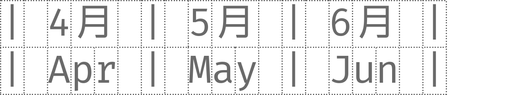

これは何？
プログラミング向けフォントとして人気の高い Fira Code に、可読性の高い IBM Plex Sans JP の日本語文字を合成したプログラミング向けフォントです。
Fira Code が提供するプログラミングに便利なリガチャ (合字) が利用できます。
また独自のイタリック体や長体を提供しています。
プログラミング向けフォントとして人気の高い Fira Code に、可読性の高い IBM Plex Sans JP の日本語文字を合成したプログラミング向けフォントです。
Fira Code が提供するプログラミングに便利なリガチャ (合字) が利用できます。
また独自のイタリック体や長体を提供しています。
Fira Code が持つグリフを全てそのまま利用できます。
また日本語文字などは、IBM Plex Sans JP で補っています。
半角文字と全角文字の幅を 1:2 に揃えています。
Fira Code が持つプログラミング向けのリガチャを利用できます。
Regular と Bold の 2 ウェイトを提供しています。
Fira Code には無い Firple 独自の字形を持ったイタリック体を提供しています。
Fira Code の字幅を縮小した Slim サブファミリーを提供しています。

Fira Code の英字をそのまま利用できます。日本語文字は字間にゆとりが生まれます。
| フォント名 | 説明 |
|---|---|
| Firple Regular | Fira Code Regular + IBM Plex Sans JP Text |
| Firple Bold | Fira Code Bold + IBM Plex Sans JP Bold |
| Firple Italic | Firple Regular のイタリック体 |
| Firple Bold Italic | Firple Bold のイタリック体 |
Fira Code の字幅を縮小しており、日本語文字が自然な字間になります。
| フォント名 | 説明 |
|---|---|
| Firple Slim Regular | Firple Regular の字幅縮小版 |
| Firple Slim Bold | Firple Bold の字幅縮小版 |
| Firple Slim Italic | Firple Italic の字幅縮小版 |
| Firple Slim Bold Italic | Firple Bold Italic の字幅縮小版 |
サンプルテキストは自由に変更できます。
以下のボタンからフォントをダウンロードできます。